Praktik Pengalaman Lapangan (PPL) – Mandiri
SMP Negeri 5 Yogyakarta
Saya Purusa Mahadika dari Prodi Pendidikan IPS Universitas Negeri Yogyakarta sedang melaksanakan Program Profesi Guru (Calon Guru) tahun 2026. Portofolio ini merangkum perjalanan pembelajaran, artefak, refleksi, dan kegiatan selama PPL.
Kenali Profil Saya Lokasi PPLEnam Laman Utama
Profil Mahasiswa
Informasi lengkap tentang identitas, latar belakang pendidikan, dan tujuan sebagai guru
Pembelajaran
Perjalanan pembelajaran struktural dengan pencapaian berkelanjutan
Artefak
Kumpulan karya dan dokumen pendukung pembelajaran
Refleksi dan Penilaian
Evaluasi dan masukan untuk pengembangan diri
UTS dan UAS
Memuat video pembelajaran dan perangkat pembelajaran terbaik
Kegiatan Non Mengajar
Memuat deskripsi kegiatan dan dokumen kegiatan
Purusa Mahadika
Mahasiswa Program Profesi Guru (Calon Guru) IPS · Universitas Negeri Yogyakarta · 2026
Profil Mahasiswa berisi seperti ini
"Ajining dhiri dumunung ana ing lathi, ajining raga ana ing busana."
Peribahasa Jawa · Warisan Budaya
Saya Purusa Mahadika, mahasiswa Program Profesi Guru (Calon Guru) Tahun 2026 yang berasal dari Purworejo, Jawa Tengah. Nama Purworejo berasal dari kata purwa yang berarti awal atau permulaan dan rejo yang berarti makmur — sebuah doa sekaligus harapan agar daerah ini senantiasa menjadi tempat tumbuhnya kesejahteraan dan kemajuan.
Purworejo dikenal memiliki bedug yang melekat kuat melalui keberadaan Bedug Pendowo, salah satu bedug terbesar di Indonesia yang berada di Masjid Agung Darul Muttaqin Purworejo. Bagi masyarakat Purworejo, bedug bukan sekadar alat penanda waktu salat, melainkan simbol persatuan, kebersamaan, dan semangat gotong royong yang diwariskan dari generasi ke generasi.
Tumbuh di lingkungan yang menjunjung tinggi budaya dan pendidikan membuat saya memahami bahwa pembelajaran tidak hanya diperoleh dari ruang kelas. Pengalaman ini membentuk cara pandang saya sebagai calon pendidik yang percaya bahwa pembelajaran akan lebih bermakna ketika dikaitkan dengan lingkungan dan budaya yang dekat dengan peserta didik.
Mengapa Memilih Jalan Menjadi Guru
Saya memilih menjadi guru karena saya percaya pendidikan tidak boleh menjadi penjara bagi potensi anak. Sebagai pribadi yang berjiwa bebas, saya melihat ruang kelas bukan sebagai tempat untuk mendikte, melainkan sebagai laboratorium ruang merdeka — di mana setiap anak berhak menemukan warna aslinya.
Terinspirasi dari dinamika sosial di Purworejo, saya menyadari bahwa setiap wilayah memiliki keunikan lokal. Begitu pula dengan manusia; mereka membutuhkan ruang yang adaptif dan fleksibel untuk dapat tumbuh maksimal.
"Pendidikan adalah seni untuk membuat manusia menjadi merdeka, bukan robot yang patuh pada seragam pikiran."
— Purusa “DraVn” Mahadika
Kompetensi yang ingin dibangun
Pedagogik fleksibel dan kreatif
Merancang strategi pembelajaran yang adaptif, tidak kaku, dan selalu relevan dengan tren perkembangan zaman.
Pembelajaran Berbasis Eksploratif
Mendorong murid keluar dari teks buku untuk mengamati, meneliti, dan berinteraksi langsung dengan realitas sosial.
Manajemen Kelas Egaliter
Menciptakan ekosistem kelas yang demokratis, minim tekanan, dan menghargai kebebasan berpendapat.
Pemanfaatan Teknologi Multimedia
Menguasai alat digital modern untuk mengemas materi IPS menjadi media pembelajaran visual yang interaktif dan seru.
Evaluasi dan Refleksi Berbasis Proses
Menilai perkembangan murid secara humanis berdasarkan usaha, progres individu, dan karya nyata.
Karakter guru profesional yang dibangun
Perjalanan Pembelajaran
Satu siklus praktik mengajar terbimbing dan empat siklus praktik mengajar mandiri. Pilih siklus untuk membaca laporannya.
VII C – SMP N 5 Yogyakarta
Kondisi Geografis, Kehidupan Sosial Budaya, Dan Pemanfaatan Lingkungan Secara Berkelanjutan
VIII H – SMP N 5 Yogyakarta
Sumber Daya Manusia dan Interaksi Sosial
VIII H – SMP N 5 Yogyakarta
Konektivitas Antarruang dan Pengaruh Kondisi Geografis terhadap Harga Barang
VIII H – SMP N 5 Yogyakarta
Sejarah dan Hakikat Sejarah dalam Perubahan Manusia
VIII H – SMP N 5 Yogyakarta
Siklus 1 — Praktik Mengajar Terbimbing
VII C – SMP N 5 Yogyakarta
Deskripsi Kegiatan Praktik Mengajar
Kegiatan praktik mengajar mata pelajaran Ilmu Pengetahuan Sosial (IPS) dilaksanakan di kelas VII SMP Negeri 5 Yogyakarta dengan materi “Menemukan Posisi Indonesia: Eksplorasi Lokasi, Letak, dan Pengaruhnya terhadap Kehidupan Masyarakat”. Pembelajaran berlangsung dalam dua pertemuan dengan alokasi waktu total 4 JP (4 × 40 menit). Kegiatan belajar menggunakan model Discovery Learning, kerangka Desain Universal untuk Pembelajaran (DUP), dan pendekatan Pembelajaran Mendalam. Murid memperoleh kesempatan untuk mengamati, mengajukan pertanyaan, mencari dan mengolah informasi, memeriksa hasil temuan, serta menyusun kesimpulan.
Pertemuan pertama berfokus pada pengenalan lokasi, arah mata angin, denah, serta perbedaan lokasi absolut dan lokasi relatif. Kegiatan diawali dengan check-in emosi menggunakan pilihan ekspresi atau emoji, dilanjutkan dengan pengamatan denah lingkungan sekolah dan pertanyaan pemantik tentang cara menunjukkan lokasi. Murid kemudian bekerja dalam kelompok melalui LKPD “Misi Detektif Lokasi”, menentukan posisi tempat pada denah, mengelompokkan contoh lokasi absolut dan relatif, serta menyusun petunjuk arah. Hasil penyelidikan dibagikan dan dibandingkan dengan kelompok lain, kemudian murid menuliskan pemahaman dan kesulitan yang dialami.
Pertemuan kedua berfokus pada letak astronomis dan letak geografis Indonesia serta pengaruhnya terhadap kehidupan masyarakat. Murid mengamati peta Indonesia dan peta dunia, menemukan koordinat astronomis Indonesia, serta mengidentifikasi posisi Indonesia di antara Benua Asia dan Australia serta Samudra Hindia dan Pasifik. Melalui LKPD “Ekspedisi Letak Indonesia”, murid menghubungkan letak astronomis dengan iklim dan zona waktu, serta letak geografis dengan perdagangan, interaksi antarruang, dan keragaman budaya. Murid menyajikan temuan melalui kegiatan “60 Second Indonesia” dengan pilihan media berupa peta, poster, kartu profil, atau penjelasan lisan, kemudian membuat kesimpulan dan refleksi.
Strategi Pembelajaran yang Digunakan
Model Discovery Learning: Pembelajaran memberi kesempatan kepada murid untuk membangun pemahaman melalui pengamatan denah dan peta, perumusan pertanyaan, pengumpulan serta pengolahan informasi, pembuktian hasil, dan penarikan kesimpulan. LKPD berbasis misi digunakan untuk membantu murid menerapkan konsep lokasi dan letak Indonesia.
Pembelajaran Mendalam, Desain Universal untuk Pembelajaran (DUP), dan Pembelajaran Sosial-Emosional (PSE): Pembelajaran dirancang kontekstual, kolaboratif, dan memberi pilihan cara menyampaikan hasil. Check-in emosi mendukung kesadaran diri, sedangkan pembagian peran, kegiatan diskusi, saling membantu, mendengarkan pendapat, dan memberi tanggapan secara santun mendukung keterampilan berelasi.
Analisis Kelebihan dan Tantangan Pengalaman Pembelajaran
| Kelebihan Desain Pembelajaran | Kelemahan Desain Pembelajaran |
|---|---|
|
|
Refleksi Pengalaman Mengajar
Praktik mengajar berdasarkan ini menjadi pengalaman untuk menerapkan pembelajaran IPS yang berpusat pada murid. Penggunaan denah sekolah dan peta Indonesia membantu mengaitkan konsep lokasi dengan lingkungan yang dekat dengan kehidupan murid. Kegiatan LKPD “Misi Detektif Lokasi” dan “Ekspedisi Letak Indonesia” memberi ruang bagi murid untuk bekerja sama, menemukan informasi, mengemukakan alasan, serta membandingkan hasil penyelidikan. Check-in emosi juga menjadi bagian awal untuk membantu murid mengenali kesiapan dirinya sebelum belajar.
Hal yang perlu menjadi perhatian adalah memastikan seluruh murid memahami instruksi dan memperoleh kesempatan berpartisipasi. Dalam kegiatan kelompok, kemampuan membaca denah, membedakan lokasi absolut dan relatif, serta memahami koordinat dan pengaruh letak Indonesia dapat berbeda-beda. Oleh karena itu, guru perlu memantau proses diskusi, memberikan pertanyaan penuntun atau contoh tambahan kepada murid yang memerlukan bantuan, dan memastikan pembagian tugas tidak hanya dikerjakan oleh anggota tertentu. Pengelolaan waktu untuk presentasi dan refleksi juga perlu dijaga agar semua tahap pembelajaran terlaksana.
Rencana Perbaikan untuk Pembelajaran Mendatang
Penguatan scaffolding: Menyiapkan contoh denah dan peta yang lebih sederhana, kartu istilah, serta pertanyaan penuntun bagi murid yang masih kesulitan membedakan lokasi absolut dan relatif atau membaca garis lintang dan bujur.
Pengelolaan waktu presentasi: Mengatur durasi penyampaian hasil secara singkat melalui format “60 Second Indonesia” atau presentasi berpasangan agar seluruh kelompok memperoleh kesempatan menyampaikan temuan.
Penguatan asesmen proses dan teman sebaya: Menggunakan lembar pengamatan sederhana untuk mencatat partisipasi, pembagian peran, kemampuan mendengarkan, dan sikap menghargai pendapat teman selama diskusi.
Penyediaan media alternatif: Menyiapkan peta, denah, dan LKPD dalam bentuk cetak selain media visual atau digital, sehingga kegiatan tetap dapat berlangsung ketika akses perangkat atau internet terbatas.
Kesimpulan
Praktik mengajar IPS berdasarkan “Menemukan Posisi Indonesia: Eksplorasi Lokasi, Letak, dan Pengaruhnya terhadap Kehidupan Masyarakat” dirancang untuk membantu murid memahami lokasi melalui arah dan denah, membaca informasi sederhana pada peta, serta menganalisis pengaruh letak Indonesia terhadap kehidupan masyarakat. Model Discovery Learning yang dipadukan dengan Pembelajaran Mendalam, DUP, dan PSE memberi ruang bagi murid untuk menyelidiki, bekerja sama, menyampaikan temuan, dan melakukan refleksi. Perbaikan berkelanjutan diperlukan terutama dalam pemberian bantuan sesuai kebutuhan, pemerataan partisipasi kelompok, dokumentasi asesmen, dan pengelolaan waktu agar pembelajaran IPS semakin bermakna dan inklusif.
Siklus 1 — Praktik Mengajar Mandiri
VIII H – SMP N 5 Yogyakarta
Deskripsi Kegiatan Praktik Mengajar
Praktik mengajar dilaksanakan pada mata pelajaran Ilmu Pengetahuan Sosial (IPS) di kelas VIII SMP Negeri 5 Yogyakarta dengan materi “Kondisi Geografis, Kehidupan Sosial Budaya, dan Pemanfaatan Lingkungan Secara Berkelanjutan”. Pembelajaran dirancang selama dua pertemuan dengan alokasi waktu 4 JP (4 × 40 menit). Tujuan pembelajaran diarahkan agar peserta didik mampu menjelaskan hubungan kondisi geografis dengan kehidupan sosial budaya, mengenali pemanfaatan lingkungan yang berkelanjutan, serta merefleksikan pentingnya menjaga lingkungan dalam kehidupan sehari-hari.
Pada kegiatan pendahuluan, peserta didik menyapa guru, melakukan check-in emosi, dan menyampaikan kesiapan belajar melalui skala 1–5. Guru mengajukan pertanyaan lisan untuk menggali pemahaman awal mengenai materi sebelumnya dan menghubungkannya dengan topik yang akan dipelajari. Tujuan pembelajaran disampaikan agar peserta didik mengetahui arah kegiatan dan memahami bahwa materi pada pertemuan pertama akan digunakan dalam permainan dan turnamen pada pertemuan berikutnya.
Pada kegiatan inti pertemuan pertama, peserta didik mengamati peta, gambar, dan contoh lingkungan Indonesia yang ditampilkan guru. Guru memberikan penjelasan interaktif tentang kondisi geografis, mata pencaharian, kehidupan sosial, keragaman budaya, serta pemanfaatan lingkungan secara berkelanjutan. Peserta didik diajak menghubungkan materi dengan contoh di sekitar mereka, termasuk kehidupan masyarakat Yogyakarta dan Jawa Tengah. Selanjutnya, peserta didik dibagi ke dalam kelompok heterogen beranggotakan empat orang berdasarkan hasil asesmen awal. Setiap kelompok mengerjakan LKPD untuk mengidentifikasi kondisi geografis, menjelaskan pengaruhnya terhadap kehidupan sosial budaya, dan mengusulkan contoh pemanfaatan lingkungan secara berkelanjutan. Guru berkeliling untuk memberikan pertanyaan penuntun dan bantuan kepada kelompok yang mengalami kesulitan.
Pada akhir pertemuan pertama, kelompok mengumpulkan LKPD dan peserta didik menyampaikan hal yang telah dipahami serta bagian yang masih membingungkan. Guru memberikan penguatan dan menjelaskan aturan kegiatan Teams Games Tournament (TGT) “Jelajah Indonesia” untuk pertemuan berikutnya.
Pada pertemuan kedua, peserta didik berkumpul dalam empat kelompok turnamen yang masing-masing beranggotakan delapan orang. Guru menjelaskan aturan permainan dan memastikan peserta didik memahami mekanisme setiap ronde. Ronde pertama berisi sepuluh soal pilihan ganda dengan nilai sepuluh poin untuk jawaban benar. Ronde kedua berisi sepuluh soal uraian dengan nilai dua puluh poin untuk jawaban benar. Pada ronde ketiga, setiap kelompok mempertaruhkan sejumlah poin untuk menjawab satu soal tantangan; jawaban benar menambah poin sesuai taruhan, sedangkan jawaban salah mengurangi poin sesuai taruhan. Guru memandu jalannya permainan, mencatat skor, dan memberikan penguatan terhadap jawaban peserta didik.
Kegiatan ditutup dengan rekapitulasi skor, apresiasi terhadap seluruh kelompok, refleksi pengalaman belajar, dan post-test melalui Quizizz yang dibagikan melalui grup WhatsApp kelas. Peserta didik menyampaikan contoh hubungan kondisi geografis dengan kehidupan sosial budaya serta tindakan sederhana untuk menjaga lingkungan. Guru bersama peserta didik menyimpulkan bahwa kondisi geografis memengaruhi kehidupan masyarakat dan pemanfaatan lingkungan perlu dilakukan secara bijaksana serta berkelanjutan.
Strategi Pembelajaran yang Digunakan
Model Cooperative Learning tipe Teams Games Tournament (TGT)
Model ini digunakan untuk memberi kesempatan kepada peserta didik belajar melalui kerja sama, permainan, dan kompetisi yang sehat. Kegiatan turnamen dibagi menjadi tiga ronde agar peserta didik dapat menerapkan pengetahuan melalui soal pilihan ganda, uraian, dan tantangan analisis. Pemberian skor dirancang untuk mendorong keterlibatan dan tanggung jawab kelompok.
Pembelajaran Mendalam dan prinsip mindful, meaningful, joyful.
Check-in emosi membantu peserta didik mengenali kesiapan diri sebelum belajar. Pengaitan materi dengan kondisi lingkungan dan kehidupan sehari-hari membuat pembelajaran lebih bermakna, sedangkan kegiatan turnamen dirancang untuk menghadirkan suasana belajar yang menyenangkan tanpa mengabaikan pemahaman konsep.
Asesmen awal dan pendampingan sesuai kebutuhan
Pertanyaan lisan pada awal pembelajaran digunakan untuk mengetahui pemahaman awal peserta didik. Hasil pengamatan selama diskusi menjadi dasar bagi guru untuk memberikan bantuan berupa pertanyaan penuntun, penjelasan ulang, atau contoh tambahan kepada kelompok yang memerlukan dukungan.
- Pembelajaran kontekstual dan penggunaan media visual.
Peta, gambar, bahan ajar, LKPD, slide aturan permainan, dan Quizizz digunakan untuk membantu peserta didik memahami hubungan kondisi geografis dengan mata pencaharian, interaksi sosial, budaya, serta pemanfaatan lingkungan. Contoh yang dekat dengan Yogyakarta dan Jawa Tengah digunakan agar materi lebih mudah dikaitkan dengan kehidupan peserta didik.
Integrasi pembelajaran sosial emosional
Check-in emosi mendukung kesadaran diri, sedangkan diskusi kelompok dan turnamen melatih keterampilan berelasi, menghargai pendapat, menunggu giliran, berbagi tanggung jawab, serta bersikap sportif ketika memperoleh maupun kehilangan poin.
Analisis Kelebihan dan Kelemahan Desain Pembelajaran
Kelebihan Desain Pembelajaran
Keterlibatan peserta didik. Kombinasi penjelasan interaktif, diskusi LKPD, dan turnamen memberi variasi aktivitas sehingga peserta didik memiliki beberapa kesempatan untuk terlibat, baik saat memahami materi maupun saat menerapkannya.
Kerja sama dan komunikasi. Kelompok kecil pada pengerjaan LKPD memberi ruang untuk berbagi tugas dan menyampaikan pendapat. Turnamen juga mendorong anggota kelompok mendiskusikan jawaban sebelum mengambil keputusan.
Materi kontekstual. Contoh lingkungan, mata pencaharian, dan keragaman budaya di sekitar Yogyakarta dan Jawa Tengah membantu peserta didik melihat keterkaitan antara kondisi geografis dan kehidupan masyarakat.
Asesmen yang beragam. LKPD, pengamatan diskusi, pertanyaan turnamen, refleksi, dan post-test Quizizz memberikan beberapa cara untuk melihat pemahaman peserta didik.
Kelemahan dan Tantangan Pembelajaran
Pengelolaan kelas dan waktu. Kegiatan permainan dapat meningkatkan antusiasme, tetapi juga berpotensi membuat kelas lebih ramai. Guru perlu mengatur durasi setiap ronde, memperjelas aturan, dan menjaga agar suasana kompetitif tidak mengurangi kesempatan berpikir serta berdiskusi.
Pemerataan partisipasi. Dalam kelompok besar, ada kemungkinan beberapa peserta didik lebih dominan sementara anggota lain cenderung mengikuti jawaban teman. Pembagian peran dan giliran menjawab perlu dipantau agar kontribusi lebih merata.
Perbedaan pemahaman awal. Peserta didik memiliki kesiapan dan kecepatan belajar yang beragam. Sebagian mungkin membutuhkan contoh yang lebih konkret atau pertanyaan penuntun, sedangkan peserta didik yang lebih siap membutuhkan tantangan analisis lanjutan.
Kendala asesmen digital. Post-test melalui Quizizz bergantung pada ketersediaan perangkat dan jaringan internet. Alternatif asesmen cetak perlu disiapkan agar seluruh peserta didik tetap dapat mengikuti evaluasi.
Refleksi Pengalaman Mengajar
Praktik mengajar ini menjadi pengalaman untuk memahami bahwa pembelajaran IPS tidak cukup hanya menyampaikan informasi, tetapi juga perlu membantu peserta didik menghubungkan konsep dengan lingkungan dan kehidupan mereka. Penggunaan peta, gambar, LKPD, serta permainan TGT memberikan variasi pengalaman belajar. Peserta didik memperoleh kesempatan untuk menyampaikan pendapat, bekerja sama, dan menguji pemahaman melalui soal yang disajikan dalam beberapa bentuk.
Hal yang perlu menjadi perhatian adalah menjaga keseimbangan antara antusiasme permainan dan pencapaian tujuan pembelajaran. Ketika peserta didik bersemangat mengikuti kompetisi, guru tetap perlu memastikan bahwa mereka memahami alasan di balik jawaban, bukan hanya mengejar poin. Guru juga perlu mengelola kelas secara konsisten karena peserta didik yang aktif dapat membuat suasana menjadi ramai, sementara peserta didik yang lebih pendiam atau memiliki cara belajar yang berbeda memerlukan dorongan agar tetap terlibat.
Refleksi lainnya adalah pentingnya memberikan pendampingan secara fleksibel. Saat kelompok mengalami kesulitan, pertanyaan penuntun dan contoh konkret dapat membantu mereka melanjutkan diskusi tanpa langsung memberikan jawaban. Pada kegiatan kelompok, pembagian tugas yang jelas dan pergiliran peran perlu diperhatikan agar semua peserta didik mempunyai tanggung jawab. Pengalaman ini menjadi dasar untuk memperbaiki pengelolaan waktu, pemerataan partisipasi, serta kualitas umpan balik pada pembelajaran berikutnya.
Rencana Perbaikan Pembelajaran
- Memperjelas aturan dan alokasi waktu. Menyampaikan aturan permainan secara singkat dan bertahap, menampilkan pengingat durasi setiap ronde, serta menyediakan waktu khusus untuk membahas alasan jawaban setelah pertanyaan dijawab.
- Memeratakan peran dan partisipasi. Menetapkan peran dalam kelompok, menerapkan pergiliran juru bicara atau penjawab, dan meminta anggota kelompok menjelaskan kontribusinya sehingga kegiatan tidak hanya didominasi peserta didik tertentu.
- Memperkuat scaffolding. Menyiapkan pertanyaan penuntun, kata kunci, dan contoh yang lebih dekat dengan kehidupan peserta didik untuk membantu kelompok yang mengalami kesulitan. Kelompok yang lebih cepat menyelesaikan tugas dapat diberi pertanyaan lanjutan yang menuntut alasan atau solusi.
- Menyediakan alternatif asesmen. Menyiapkan soal cetak sebagai alternatif apabila peserta didik mengalami kendala perangkat atau jaringan ketika mengerjakan post-test Quizizz.
- Meningkatkan kualitas refleksi dan umpan balik. Menggunakan pertanyaan refleksi yang spesifik, misalnya konsep yang paling dipahami, hal yang masih membingungkan, dan tindakan menjaga lingkungan yang dapat dilakukan. Hasil refleksi digunakan untuk menentukan penguatan pada pertemuan selanjutnya.
Kesimpulan
Pembelajaran IPS kelas VIII dengan materi Kondisi Geografis, Kehidupan Sosial Budaya, dan Pemanfaatan Lingkungan Secara Berkelanjutan dirancang melalui model Cooperative Learning tipe Teams Games Tournament (TGT), diskusi LKPD, media visual, refleksi, dan asesmen. Rangkaian kegiatan memberi kesempatan kepada peserta didik untuk memahami materi, menghubungkannya dengan lingkungan sekitar, serta berlatih bekerja sama dan bersikap sportif. Perbaikan tetap diperlukan pada pengelolaan waktu, pemerataan partisipasi, pendampingan sesuai kebutuhan, dan penyediaan alternatif asesmen agar tujuan pembelajaran dapat dicapai secara lebih optimal.
Siklus 2 — Praktik Mengajar Mandiri
VIII H – SMP N 5 Yogyakarta
Deskripsi Kegiatan Praktik Mengajar
Praktik mengajar dilaksanakan di kelas VIII SMP Negeri 5 Yogyakarta pada mata pelajaran Ilmu Pengetahuan Sosial (IPS) dengan fokus materi Sumber Daya Manusia (SDM) dan Interaksi Sosial. Berdasarkan Rencana Pembelajaran Mendalam (RPM), pembelajaran dirancang dalam dua pertemuan dengan alokasi waktu 4 JP atau 4 × 40 menit. Pembelajaran mengintegrasikan pendekatan Teaching at the Right Level (TaRL) untuk menyesuaikan dukungan belajar dengan kesiapan peserta didik, serta prinsip pembelajaran yang mindful, meaningful, dan joyful.
Pada kegiatan pendahuluan, guru menyapa peserta didik, mengajak mereka menyiapkan diri, melakukan check-in kesiapan belajar, serta mengajukan pertanyaan lisan untuk mengingat materi sebelumnya. Pertanyaan pemantik digunakan untuk menghubungkan pengalaman peserta didik dengan topik SDM dan interaksi sosial. Pada pertemuan pertama, peserta didik mengerjakan pre-test melalui Wayground secara mandiri. Hasilnya digunakan untuk memetakan kesiapan belajar ke dalam tiga level, yaitu Dasar, Berkembang, dan Mahir. Guru menjelaskan bahwa pengelompokan dilakukan untuk memberikan dukungan belajar sesuai kebutuhan, bukan untuk membandingkan kemampuan peserta didik.
Pada kegiatan inti pertemuan pertama, peserta didik mempelajari pengertian dan pentingnya kualitas SDM, faktor-faktor yang memengaruhinya, serta upaya peningkatan kualitas SDM melalui pendidikan, kesehatan, keterampilan, kompetensi, pelatihan, kreativitas, dan pembinaan. Peserta didik kemudian bekerja dalam kelompok sesuai level TaRL dan mengerjakan LKPD dengan tingkat dukungan yang berbeda: level Dasar berfokus pada pemahaman konsep dengan scaffolding lebih intensif, level Berkembang menerapkan konsep pada kehidupan sehari-hari, dan level Mahir menganalisis serta memecahkan masalah. Pada pertemuan kedua, peserta didik mempelajari pengertian, bentuk hubungan, syarat, dan bentuk interaksi sosial, termasuk kontak sosial, komunikasi, serta contoh interaksi di keluarga, sekolah, dan masyarakat. Peserta didik mengerjakan LKPD sesuai level, mempresentasikan hasil diskusi, dan memberikan tanggapan terhadap kelompok lain.
Pada tahap penutup setiap pertemuan, peserta didik menyampaikan hal yang telah dipahami dan bagian yang masih membingungkan. Pada pertemuan kedua, refleksi juga meminta peserta didik memberikan contoh interaksi sosial dalam kehidupan sehari-hari. Guru memberikan umpan balik, meluruskan konsep yang belum tepat, dan bersama peserta didik menyimpulkan materi. Evaluasi pembelajaran mencakup hasil pre-test Wayground, pengerjaan LKPD, proses diskusi, presentasi, refleksi diri, serta post-test atau evaluasi akhir untuk mengetahui perkembangan pemahaman peserta didik.
Strategi Pembelajaran yang Digunakan
Pendekatan Teaching at the Right Level (TaRL)
TaRL digunakan untuk menyesuaikan proses dan dukungan pembelajaran dengan kesiapan belajar peserta didik berdasarkan hasil pre-test Wayground. Peserta didik dipetakan ke dalam level Dasar, Berkembang, dan Mahir. Level Dasar mendapatkan bantuan dan scaffolding yang lebih intensif untuk memahami konsep, level Berkembang diarahkan menerapkan konsep dalam kehidupan sehari-hari, sedangkan level Mahir diberi tugas analisis dan pemecahan masalah. Pengelompokan bersifat sebagai strategi dukungan belajar, sehingga guru tetap perlu memberi ruang bagi perkembangan kemampuan setiap peserta didik.
Pembelajaran Mendalam: Mindful, Meaningful, dan Joyful
RPM mengarahkan pembelajaran agar peserta didik menyadari kesiapan belajarnya, menghubungkan materi dengan kehidupan sehari-hari, serta terlibat aktif dalam diskusi dan presentasi. Materi SDM dihubungkan dengan pendidikan, kesehatan, keterampilan, dan peran manusia dalam pembangunan. Materi interaksi sosial dikaitkan dengan hubungan yang dijumpai di keluarga, sekolah, dan masyarakat. Dengan konteks tersebut, konsep diharapkan lebih mudah dipahami dan terasa relevan bagi peserta didik.
Penggunaan LKPD Berdiferensiasi
LKPD disesuaikan dengan level kesiapan belajar peserta didik. Pada materi SDM, kegiatan bergerak dari pemahaman konsep dasar hingga penerapan dan analisis masalah. Pada materi interaksi sosial, peserta didik level Dasar mengenali konsep dan contoh, level Berkembang menghubungkan konsep dengan kehidupan sehari-hari, dan level Mahir menganalisis peristiwa atau permasalahan interaksi sosial. Guru memberikan pendampingan sesuai kebutuhan selama pengerjaan LKPD.
Integrasi Pembelajaran Sosial Emosional (PSE)
Pembelajaran mengintegrasikan kesadaran diri melalui check-in kesiapan belajar dan refleksi pemahaman, keterampilan berelasi melalui kerja sama serta penghargaan terhadap pendapat teman, dan pengambilan keputusan yang bertanggung jawab melalui diskusi untuk menentukan jawaban LKPD. Guru perlu membangun suasana aman dan inklusif agar peserta didik berani bertanya, menyampaikan pendapat, membantu teman, dan menerima perbedaan kemampuan.
Analisis Kelebihan dan Kelemahan Desain Pembelajaran
Kelebihan Desain Pembelajaran
Mendorong pemetaan kebutuhan belajar: Pre-test Wayground membantu guru memperoleh gambaran awal tentang pemahaman peserta didik dan menjadi dasar pengelompokan TaRL. Pemetaan ini memungkinkan dukungan pembelajaran dirancang lebih sesuai dengan kesiapan peserta didik.
Memfasilitasi diferensiasi: LKPD dengan fokus berbeda untuk level Dasar, Berkembang, dan Mahir memberi kesempatan kepada peserta didik untuk belajar melalui tantangan yang sesuai. Scaffolding dapat membantu peserta didik yang masih membutuhkan penguatan konsep, sementara analisis kasus memberi tantangan lebih lanjut bagi peserta didik yang lebih siap.
Materi dekat dengan kehidupan peserta didik: Topik kualitas SDM dikaitkan dengan pendidikan, kesehatan, keterampilan, dan pembangunan masyarakat. Materi interaksi sosial menggunakan contoh dari keluarga, sekolah, dan masyarakat sehingga peserta didik dapat mengaitkan konsep dengan pengalaman sehari-hari.
Mengembangkan komunikasi dan nalar kritis: Diskusi LKPD, presentasi, dan tanggapan antarkelompok memberi ruang bagi peserta didik untuk menjelaskan alasan, membandingkan jawaban, dan menganalisis peristiwa sosial sesuai level kesiapan masing-masing.
Kelemahan Desain Pembelajaran
Keterbatasan waktu: Dalam alokasi waktu yang terbatas, guru perlu mengatur durasi penjelasan, pengerjaan LKPD, diskusi, presentasi, dan refleksi secara seimbang agar semua tahapan dalam RPM dapat terlaksana.
Ketergantungan pada perangkat dan jaringan: Pre-test melalui Wayground membutuhkan perangkat serta koneksi yang memadai. Jika terjadi kendala teknis, pelaksanaan asesmen dan pemetaan kesiapan belajar dapat terhambat sehingga perlu disiapkan alternatif non-digital.
Pemantauan kontribusi individu: Diskusi kelompok dapat membuat kontribusi setiap peserta didik tidak selalu terlihat secara merata. Guru perlu memantau keterlibatan, pemahaman konsep, kerja sama, dan tanggung jawab peserta didik, bukan hanya menilai hasil akhir kelompok.
Refleksi Pengalaman Mengajar
Praktik pembelajaran dengan materi SDM dan interaksi sosial dirancang untuk membantu peserta didik memahami hubungan antara kualitas manusia dan kehidupan masyarakat, sekaligus mengenali bagaimana interaksi sosial terjadi dalam keseharian. Penggunaan pertanyaan pemantik, pre-test, LKPD berdiferensiasi, diskusi, dan presentasi memberi alur dari identifikasi pemahaman awal menuju penerapan konsep. Pendekatan TaRL menjadi bagian penting karena peserta didik dapat memerlukan tingkat bantuan dan tantangan yang berbeda.
Catatan reflektif utama dari rancangan ini adalah perlunya menjaga keseimbangan antara penjelasan materi dan kesempatan peserta didik untuk mengolah konsep secara mandiri maupun bersama kelompok. Pemetaan melalui pre-test perlu ditindaklanjuti dengan pendampingan yang sesuai, bukan berhenti pada pembagian kelompok. Guru juga perlu memastikan setiap peserta didik memperoleh kesempatan berkontribusi dalam diskusi dan presentasi, serta menyediakan waktu untuk mengklarifikasi konsep yang belum dipahami.
Rencana Perbaikan Pembelajaran
Untuk menyempurnakan pelaksanaan pembelajaran berdasarkan RPM, beberapa perbaikan yang dapat dilakukan adalah sebagai berikut:
Pengaturan waktu yang lebih terstruktur: Menetapkan batas waktu yang jelas untuk penjelasan, pengerjaan LKPD, diskusi, presentasi, dan refleksi agar tujuan kedua pertemuan dapat dicapai secara proporsional.
Menyiapkan alternatif asesmen: Menyediakan soal pre-test atau evaluasi dalam bentuk cetak apabila Wayground terkendala perangkat atau jaringan, sehingga pemetaan kesiapan belajar tetap dapat dilakukan.
Memperjelas peran dan kontribusi anggota kelompok: Mendorong pembagian tugas sederhana seperti pembaca instruksi, pencatat, penyampai hasil, dan penanggap agar keterlibatan individu lebih merata. Pembagian peran disesuaikan dengan kebutuhan kelompok.
Memperkuat umpan balik dan refleksi: Menggunakan kriteria yang jelas untuk menilai ketepatan konsep, kerja sama, tanggung jawab, komunikasi, dan kemampuan menanggapi. Refleksi singkat di akhir pembelajaran digunakan untuk menentukan konsep yang perlu diperkuat pada pertemuan berikutnya.
Kesimpulan
Pembelajaran IPS kelas VIII di SMP Negeri 5 Yogyakarta dengan materi Sumber Daya Manusia dan Interaksi Sosial dirancang melalui dua pertemuan dengan pendekatan TaRL dan prinsip pembelajaran mendalam. Pre-test Wayground menjadi dasar pemetaan kesiapan belajar, sedangkan LKPD berdiferensiasi, diskusi, presentasi, dan refleksi mendukung pemahaman serta penerapan konsep. Keberhasilan pelaksanaan perlu ditinjau melalui hasil asesmen, keterlibatan peserta didik, dan kualitas diskusi. Pengelolaan waktu, kesiapan alternatif asesmen, pemerataan kontribusi kelompok, dan pemberian umpan balik menjadi aspek penting untuk perbaikan berkelanjutan.
Siklus 3 — Praktik Mengajar Mandiri
VIII H – SMP N 5 Yogyakarta
Deskripsi Kegiatan Praktik Mengajar
Praktik pembelajaran dirancang untuk peserta didik kelas VIII SMP Negeri 5 Yogyakarta pada mata pelajaran Ilmu Pengetahuan Sosial (IPS), dengan materi “Konektivitas Antarruang dan Pengaruh Kondisi Geografis terhadap Harga Barang”. Kegiatan dilaksanakan dalam dua pertemuan dengan alokasi waktu total 4 JP atau 160 menit. Pembelajaran mengacu pada Rencana Pembelajaran Mendalam (RPM) dengan tujuan agar murid mampu menjelaskan konektivitas antarruang serta menganalisis hubungan kondisi geografis, jarak, aksesibilitas, dan transportasi dengan distribusi serta perbedaan harga barang.
Pada pertemuan pertama, kegiatan pendahuluan dimulai dengan sapaan dan pemeriksaan singkat kesiapan belajar. Guru menampilkan fenomena tentang ikan dari daerah pesisir yang dapat dijual di kota yang jauh dari pantai. Pertanyaan pemantik tersebut digunakan untuk menggali pengetahuan awal murid mengenai alasan suatu wilayah membutuhkan wilayah lain. Setelah tujuan dan aturan pembelajaran disampaikan, guru menjelaskan konsep ruang, karakteristik wilayah, dan bentuk konektivitas melalui transportasi, komunikasi, perdagangan, serta mobilitas manusia.
Kegiatan inti pertemuan pertama menggunakan model Cooperative Learning dengan media permainan Monopoly Konektivitas. Murid bekerja dalam kelompok heterogen dan berbagi peran, seperti ketua, pemain/pion, pembaca kartu, pencatat, analis, serta penjaga waktu. Melalui Kartu Wilayah, Kartu Kesempatan, dan Kartu Tantangan, murid mendiskusikan kebutuhan antarruang, pertukaran barang, pilihan jalur transportasi, serta hambatan konektivitas. Kelompok kemudian menyampaikan temuan dan menerima tanggapan dari kelompok lain. Pada akhir pertemuan, murid menuliskan tiga hal yang telah dipahami dan satu hal yang masih ingin ditanyakan.
Pada pertemuan kedua, guru mengaitkan kembali pembelajaran sebelumnya dengan contoh barang yang memiliki harga berbeda di dua wilayah. Murid menyampaikan dugaan penyebabnya sebelum mempelajari hubungan kondisi geografis dengan distribusi dan harga barang, termasuk jarak, aksesibilitas, kondisi jalan atau medan, sarana transportasi, dan biaya distribusi. Selanjutnya, murid mengikuti permainan Monopoly Harga & Wilayah. Kartu kondisi geografis, seperti jarak jauh, jalan rusak, medan pegunungan, keterbatasan transportasi, pelabuhan baru, atau akses jalan yang membaik, digunakan sebagai dasar untuk menentukan jalur distribusi dan memperkirakan konsekuensi biayanya.
Pembelajaran ditutup dengan presentasi singkat mengenai keputusan kelompok beserta alasan geografis atau ekonominya. Guru dan murid menyusun kesimpulan bahwa kondisi geografis dapat memengaruhi aksesibilitas dan konektivitas, yang kemudian berdampak pada proses serta biaya distribusi dan berpotensi memengaruhi harga barang. Murid mengerjakan pertanyaan analisis pada LKPD dan melakukan refleksi mengenai pemahaman serta kontribusi diri selama kerja kelompok.
Strategi Pembelajaran yang Digunakan
Permainan digunakan untuk memberi pengalaman belajar interaktif. Murid perlu berdiskusi, berbagi peran, memilih jalur distribusi, menyampaikan alasan, dan menyepakati keputusan kelompok. Aktivitas ini diarahkan untuk membangun pembelajaran yang berkesadaran (mindful), bermakna (meaningful), dan menggembirakan (joyful).Model Cooperative Learning dengan media Monopoly.
Fenomena distribusi ikan dari pesisir ke kota serta perbandingan harga barang di dua wilayah membantu murid menghubungkan konsep IPS dengan kehidupan sehari-hari. Contoh tersebut mendorong murid mengidentifikasi hubungan antara kebutuhan wilayah, interaksi, konektivitas, distribusi, biaya, dan harga.Pembelajaran kontekstual berbasis masalah.
Kelompok heterogen dan pembagian peran dirancang agar setiap murid memiliki kesempatan berkontribusi. Murid dilatih mendengarkan pendapat, menyampaikan alasan dengan santun, membantu anggota kelompok, serta menyelesaikan perbedaan pendapat melalui kesepakatan.Pembelajaran kolaboratif dan pembagian peran.
Check-in kesiapan belajar mendukung kesadaran diri. Kegiatan berbagi peran dan berdiskusi melatih keterampilan berelasi, sedangkan pemilihan jalur distribusi dan pertimbangan konsekuensinya melatih pengambilan keputusan yang bertanggung jawab.Integrasi Pembelajaran Sosial Emosional (PSE).
Guru menggali pemahaman awal melalui pertanyaan pemantik dan mengamati respons murid selama permainan serta diskusi. Pertanyaan penuntun dan bantuan diberikan sesuai kebutuhan. Pemahaman akhir ditinjau melalui kartu tantangan, LKPD, presentasi, dan refleksi individu.Asesmen berkelanjutan dan pemberian scaffolding.
Analisis Kelebihan dan Kelemahan Desain Pembelajaran
Kelebihan Desain Pembelajaran
Pembelajaran aktif dan menarik. Media Monopoly memberi kesempatan kepada murid untuk belajar melalui permainan, diskusi, dan pengambilan keputusan, bukan hanya mendengarkan penjelasan guru.
Konsep lebih konkret dan kontekstual. Fenomena distribusi barang dan perbedaan harga membantu murid memahami keterkaitan kondisi wilayah dengan kegiatan ekonomi sehari-hari.
Melatih penalaran sebab-akibat. Murid diarahkan menyusun alur kondisi geografis → aksesibilitas/konektivitas → distribusi → biaya distribusi → kemungkinan pengaruh terhadap harga barang.
Mengembangkan gotong royong dan komunikasi. Pembagian peran, diskusi, dan presentasi memberi ruang untuk melatih kerja sama, tanggung jawab, serta penyampaian pendapat secara jelas dan santun.
Kelemahan Desain Pembelajaran
Pengelolaan waktu permainan. Permainan yang menarik dapat menyita waktu apabila aturan, giliran, dan durasi diskusi tidak ditegaskan sejak awal. Waktu untuk klarifikasi konsep dan refleksi perlu tetap dijaga.
Pemerataan partisipasi. Dalam kelompok, ada kemungkinan sebagian murid lebih dominan sementara anggota lain kurang terlibat. Pembagian peran perlu dipantau dan diikuti kesempatan berbicara yang seimbang.
Perbedaan pemahaman murid. Sebagian murid mungkin membutuhkan bantuan untuk menghubungkan kondisi geografis dengan biaya distribusi dan harga. Pertanyaan penuntun serta contoh bertahap diperlukan.
Ketepatan analisis harga. Murid perlu memahami bahwa kondisi geografis merupakan salah satu faktor yang dapat memengaruhi harga melalui distribusi, bukan satu-satunya penyebab perbedaan harga.
Refleksi Pengalaman Mengajar
Rancangan praktik pembelajaran ini memberikan kesempatan untuk menghadirkan materi konektivitas antarruang melalui aktivitas yang dekat dengan kehidupan murid. Penggunaan fenomena distribusi ikan dan perbedaan harga barang dapat menjadi pintu masuk untuk membangun rasa ingin tahu serta menghubungkan konsep geografis dengan aktivitas ekonomi. Permainan Monopoly juga memberi konteks bagi murid untuk berdiskusi, menentukan pilihan, dan menyampaikan alasan.
Hal yang perlu menjadi perhatian dalam pelaksanaan adalah menjaga keseimbangan antara waktu bermain, diskusi, presentasi, dan penguatan materi. Permainan perlu tetap berfungsi sebagai sarana mencapai tujuan belajar, bukan menjadi kegiatan yang berdiri sendiri. Guru juga perlu memastikan setiap anggota kelompok menjalankan peran dan memahami alasan di balik keputusan yang dibuat. Refleksi ini merupakan evaluasi terhadap rancangan pembelajaran; catatan mengenai respons nyata murid dan umpan balik guru pamong dapat ditambahkan setelah kegiatan dilaksanakan.
Rencana Perbaikan Pembelajaran
Guru menyampaikan aturan permainan, urutan giliran, serta batas waktu untuk membaca kartu, berdiskusi, dan mengambil keputusan sebelum permainan dimulai.Memperjelas aturan dan batas waktu.
Setiap anggota kelompok diberi tugas yang jelas dan guru memantau keterlibatan mereka. Jika diperlukan, peran dapat diputar agar lebih banyak murid berlatih menganalisis dan menyampaikan hasil.Memastikan pemerataan peran.
Guru menyiapkan pertanyaan penuntun, misalnya “Apa hambatan distribusinya?”, “Bagaimana pengaruhnya terhadap biaya?”, dan “Mengapa kondisi tersebut dapat memengaruhi harga?”Memperkuat scaffolding.
Alokasi untuk menyimpulkan konsep, mengerjakan LKPD, dan merefleksikan proses belajar perlu dipertahankan agar tujuan pembelajaran tidak berhenti pada aktivitas permainan.Menjaga waktu penguatan dan refleksi.
Jawaban kartu tantangan, LKPD, dan refleksi individu digunakan untuk menentukan konsep yang perlu dijelaskan kembali serta murid yang membutuhkan pendampingan tambahan.Menggunakan hasil asesmen untuk tindak lanjut.
Kesimpulan
RPM bertema “Menjelajah Konektivitas Antarruang dan Memahami Mengapa Harga Barang Berbeda” dirancang untuk membantu murid kelas VIII memahami hubungan antarruang dan menganalisis pengaruh kondisi geografis terhadap distribusi serta harga barang. Model Cooperative Learning dengan media Monopoly dipadukan dengan diskusi, analisis kasus, presentasi, dan refleksi. Keberhasilan pembelajaran perlu ditinjau melalui ketepatan jawaban, kualitas alasan, kolaborasi, dan komunikasi murid. Pengelolaan waktu, pemerataan partisipasi, serta penguatan hubungan sebab-akibat menjadi fokus perbaikan dalam pelaksanaan berikutnya.
Siklus 4 — Praktik Mengajar Mandiri
VIII H – SMP N 5 Yogyakarta
Deskripsi Kegiatan Praktik Mengajar
Praktik pembelajaran dirancang untuk peserta didik kelas VIII SMP Negeri 5 Yogyakarta pada mata pelajaran Ilmu Pengetahuan Sosial (IPS), dengan materi “Sejarah dan Hakikat Sejarah dalam Perubahan Manusia”. Kegiatan dilaksanakan dalam satu pertemuan dengan alokasi waktu 2 JP atau 80 menit. Pembelajaran berfokus pada pemahaman konsep dasar ilmu sejarah, meliputi manusia/tokoh, ruang/tempat, waktu, kronologi, dan perubahan, serta keterhubungan masa lampau, masa kini, dan masa depan.
Kegiatan pendahuluan berlangsung selama 10 menit. Guru menyapa peserta didik dan mengajak mereka melakukan check-in emosi untuk mengenali perasaan serta kesiapan belajar. Guru kemudian memberikan pertanyaan diagnostik lisan mengenai pengertian sejarah dan contoh peristiwa sejarah yang telah diketahui peserta didik. Setelah itu, guru menyampaikan tujuan pembelajaran dan menjelaskan alur kegiatan menggunakan LKPD “Susun Jejak Peristiwa”.
Pada tahap memahami selama 15 menit, peserta didik mengamati gambar atau contoh peristiwa sejarah Indonesia yang ditampilkan guru. Melalui pertanyaan penuntun, peserta didik mengidentifikasi tokoh, peristiwa, tempat, dan waktu. Guru menguatkan pemahaman mengenai konsep manusia, ruang, waktu, kronologi, dan perubahan serta menghubungkannya dengan pengetahuan atau konteks lokal yang dekat dengan kehidupan peserta didik.
Tahap mengaplikasi berlangsung selama 35 menit. Peserta didik bekerja dalam kelompok kecil untuk menyelesaikan LKPD “Susun Jejak Peristiwa” dengan memasangkan kartu tokoh, peristiwa, tempat, dan waktu. Kelompok mendiskusikan hubungan antarkartu, menyusun urutan peristiwa jika diperlukan, serta menjelaskan nilai yang dapat dipelajari dari peristiwa tersebut untuk kehidupan masa kini dan masa depan. Guru berkeliling untuk mengamati proses kerja, memberikan pertanyaan penuntun, dan membantu kelompok yang mengalami kesulitan. Beberapa kelompok kemudian menyampaikan hasil diskusi secara singkat.
Pada 20 menit terakhir, guru dan peserta didik menyimpulkan pembelajaran. Peserta didik melakukan refleksi singkat mengenai hal yang telah dipahami dan nilai sejarah yang dianggap relevan. Sebagai asesmen akhir, peserta didik mengerjakan soal secara mandiri melalui Wayground menggunakan tautan atau kode yang dibagikan guru. Hasil LKPD, observasi proses kerja, refleksi, dan asesmen Wayground digunakan untuk meninjau ketercapaian tujuan pembelajaran.
Strategi Pembelajaran yang Digunakan
Pembelajaran menggunakan model Discovery Learning dengan memberikan kesempatan kepada peserta didik mengamati contoh peristiwa, menemukan unsur-unsur sejarah, dan menyimpulkan keterkaitan antarkonsep. Kerangka Culturally Responsive Teaching (CRT) diterapkan dengan menghubungkan pembahasan sejarah dengan contoh yang dekat dengan lingkungan, pengalaman, dan pengetahuan peserta didik.Discovery Learning dalam Kerangka CRT
LKPD “Susun Jejak Peristiwa” menjadi sarana bagi peserta didik untuk bekerja sama mengidentifikasi dan menghubungkan tokoh, peristiwa, tempat, serta waktu. Diskusi kelompok memberi kesempatan kepada peserta didik untuk bertukar pendapat, memberikan alasan, dan menyepakati jawaban berdasarkan informasi yang tersedia.Pembelajaran Kolaboratif Melalui LKPD.
Guru memberikan bantuan secara bertahap melalui pertanyaan penuntun, kata kunci, dan klarifikasi konsep. Pendampingan diberikan sesuai kebutuhan kelompok agar peserta didik dapat menghubungkan informasi sejarah dengan lebih tepat tanpa langsung diberikan seluruh jawaban.Pembelajaran Scaffolding.
Check-in emosi mendukung kesadaran diri peserta didik terhadap kondisi dan kesiapan belajar. Saat mengerjakan LKPD, peserta didik dilatih untuk mendengarkan pendapat, berbagi tugas, membantu teman, dan menyampaikan tanggapan secara santun. Dengan demikian, proses belajar tidak hanya berfokus pada pemahaman materi, tetapi juga pada keterampilan berelasi.Integrasi Pembelajaran Sosial Emosional (PSE).
Asesmen dilakukan melalui pertanyaan diagnostik lisan, pengamatan kerja kelompok, hasil LKPD, refleksi, dan tes individu melalui Wayground. Penggunaan beberapa bukti asesmen membantu guru melihat pemahaman konsep sekaligus proses peserta didik dalam bekerja sama dan menjelaskan hubungan unsur-unsur sejarah.Asesmen Berkelanjutan dan Asesmen Akhir.
Analisis Kelebihan dan Kelemahan Desain Pembelajaran Kelebihan Desain Pembelajaran
Aktif dan konkret. Penggunaan kartu pada LKPD memberi kesempatan kepada peserta didik untuk mengolah informasi dan menyusun hubungan antarkomponen peristiwa, bukan hanya mendengarkan penjelasan guru.
Mendukung penalaran kronologis. Kegiatan memasangkan tokoh, peristiwa, tempat, dan waktu membantu peserta didik memahami bahwa suatu peristiwa sejarah memiliki konteks dan keterkaitan.
Kontekstual dan responsif terhadap latar peserta didik. Contoh sejarah yang dekat dengan lingkungan dapat membantu peserta didik menghubungkan pembelajaran dengan pengetahuan yang telah dimiliki.
Mengembangkan kerja sama dan komunikasi. Diskusi kelompok melatih peserta didik berbagi tugas, menyampaikan alasan, serta menghargai pandangan teman.
Kelemahan atau Hal yang Perlu DiantisipasiAsesmen akhir lebih terarah. Wayground digunakan untuk memperoleh gambaran pemahaman individu setelah peserta didik menyelesaikan kegiatan kolaboratif.
Pengelolaan waktu. Diskusi memasangkan kartu dapat berlangsung lebih lama dari rencana sehingga guru perlu menegaskan batas waktu pada setiap tahap.
Pemerataan partisipasi. Sebagian peserta didik berpotensi lebih dominan dalam kelompok, sedangkan peserta didik lain kurang menyampaikan pendapat.
Perbedaan pemahaman. Peserta didik mungkin masih kesulitan membedakan tokoh, peristiwa, tempat, dan waktu atau menjelaskan hubungan antarkomponen tersebut.
Kesiapan teknis Wayground. Asesmen akhir memerlukan perangkat dan akses internet yang memadai; guru perlu menyiapkan petunjuk serta alternatif apabila terjadi kendala teknis.
Refleksi Pengalaman Mengajar
Rancangan pembelajaran satu pertemuan ini menempatkan peserta didik sebagai pihak yang aktif menemukan hubungan antarkomponen sejarah. Kegiatan pengamatan dan penggunaan LKPD “Susun Jejak Peristiwa” diharapkan membantu peserta didik memahami bahwa peristiwa sejarah tidak berdiri sendiri, melainkan berkaitan dengan tokoh, tempat, waktu, kronologi, dan perubahan. Penggunaan contoh yang dekat dengan lingkungan peserta didik juga memberi ruang bagi pengetahuan awal mereka untuk menjadi bagian dari pembelajaran.
Hal yang perlu diperhatikan dalam pelaksanaan adalah menjaga keseimbangan antara penjelasan konsep, pengerjaan LKPD, penyampaian hasil, refleksi, dan asesmen Wayground. Guru perlu memastikan bahwa kegiatan memasangkan kartu tidak hanya menjadi aktivitas menyusun jawaban, tetapi disertai alasan yang menunjukkan pemahaman. Selain itu, pendampingan perlu diberikan secara proporsional agar peserta didik yang mengalami kesulitan tetap dapat berpartisipasi.
Karena laporan ini disusun berdasarkan RPM yang telah direvisi, respons nyata peserta didik, hasil asesmen Wayground, dan umpan balik guru pamong perlu dilengkapi berdasarkan catatan setelah pembelajaran benar-benar dilaksanakan. Dengan demikian, refleksi akhir dapat menggambarkan keberhasilan dan tantangan yang benar-benar terjadi di kelas, bukan sekadar perkiraan.
Rencana Perbaikan Pembelajaran
- Memperjelas instruksi dan batas waktu. Guru menjelaskan langkah pengerjaan LKPD, aturan penggunaan kartu, serta waktu yang tersedia sebelum kegiatan kelompok dimulai.
- Memeratakan keterlibatan peserta didik. Setiap anggota kelompok diberi kesempatan untuk memasangkan kartu, menyampaikan alasan, atau mencatat hasil. Guru memantau agar tugas tidak hanya dikerjakan oleh satu orang.
- Memperkuat pertanyaan penuntun. Guru dapat menggunakan pertanyaan seperti “Siapa tokoh yang terlibat?”, “Peristiwa apa yang terjadi?”, “Di mana dan kapan peristiwa itu berlangsung?”, serta “Apa hubungan unsur-unsur tersebut?”.
- Menjaga waktu refleksi dan asesmen. Guru mempertahankan alokasi waktu untuk menyimpulkan pembelajaran dan mengerjakan asesmen individu melalui Wayground agar hasil belajar setiap peserta didik dapat diketahui.
- Menggunakan hasil asesmen untuk tindak lanjut. Jawaban LKPD dan hasil Wayground dianalisis untuk menentukan konsep yang perlu dijelaskan kembali. Peserta didik yang membutuhkan bantuan dapat diberikan kartu bergambar, kata kunci, pasangan informasi, atau pertanyaan bertahap; peserta didik yang sudah menguasai materi dapat diminta membuat paket kartu peristiwa dan pertanyaan analisis.
Kesimpulan
Pembelajaran IPS dengan materi “Sejarah dan Hakikat Sejarah dalam Perubahan Manusia” dirancang untuk dilaksanakan dalam satu pertemuan selama 2 JP atau 80 menit. Model Discovery Learning dalam kerangka CRT dipadukan dengan pengamatan contoh sejarah, LKPD “Susun Jejak Peristiwa”, diskusi kolaboratif, refleksi, dan asesmen akhir melalui Wayground. Rangkaian kegiatan ini diarahkan untuk membantu peserta didik mengidentifikasi serta menghubungkan tokoh, peristiwa, tempat, dan waktu, sekaligus memahami nilai peristiwa sejarah bagi kehidupan masa kini dan masa depan. Perbaikan utama yang perlu diperhatikan adalah pengelolaan waktu, pemerataan partisipasi, pemberian scaffolding, dan pemanfaatan hasil asesmen untuk tindak lanjut.
Dokumen Proses dan Hasil Pembelajaran
LKPD, Media/PowerPoint, Rencana Pembelajaran Mendalam (RPM/RPP), dan dokumentasi pelaksanaan pada setiap siklus.
Sumber Daya Alam
Refleksi Singkat: Analisis Kelebihan dan Kelemahan Desain Pembelajaran
| Kelebihan Desain Pembelajaran | Kelemahan Desain Pembelajaran |
|---|---|
|
|
Kondisi Geografis, Sosial Budaya dan Pemanfaatan Lingkungan Secara Berkelanjutan
Refleksi Singkat: Analisis Kelebihan dan Kelemahan Desain Pembelajaran
Kelebihan Desain Pembelajaran
Keterlibatan peserta didik. Kombinasi penjelasan interaktif, diskusi LKPD, dan turnamen memberi variasi aktivitas sehingga peserta didik memiliki beberapa kesempatan untuk terlibat, baik saat memahami materi maupun saat menerapkannya.
Kerja sama dan komunikasi. Kelompok kecil pada pengerjaan LKPD memberi ruang untuk berbagi tugas dan menyampaikan pendapat. Turnamen juga mendorong anggota kelompok mendiskusikan jawaban sebelum mengambil keputusan.
Materi kontekstual. Contoh lingkungan, mata pencaharian, dan keragaman budaya di sekitar Yogyakarta dan Jawa Tengah membantu peserta didik melihat keterkaitan antara kondisi geografis dan kehidupan masyarakat.
Asesmen yang beragam. LKPD, pengamatan diskusi, pertanyaan turnamen, refleksi, dan post-test Quizizz memberikan beberapa cara untuk melihat pemahaman peserta didik.
Kelemahan dan Tantangan Pembelajaran
Pengelolaan kelas dan waktu. Kegiatan permainan dapat meningkatkan antusiasme, tetapi juga berpotensi membuat kelas lebih ramai. Guru perlu mengatur durasi setiap ronde, memperjelas aturan, dan menjaga agar suasana kompetitif tidak mengurangi kesempatan berpikir serta berdiskusi.
Pemerataan partisipasi. Dalam kelompok besar, ada kemungkinan beberapa peserta didik lebih dominan sementara anggota lain cenderung mengikuti jawaban teman. Pembagian peran dan giliran menjawab perlu dipantau agar kontribusi lebih merata.
Perbedaan pemahaman awal. Peserta didik memiliki kesiapan dan kecepatan belajar yang beragam. Sebagian mungkin membutuhkan contoh yang lebih konkret atau pertanyaan penuntun, sedangkan peserta didik yang lebih siap membutuhkan tantangan analisis lanjutan.
Kendala asesmen digital. Post-test melalui Quizizz bergantung pada ketersediaan perangkat dan jaringan internet. Alternatif asesmen cetak perlu disiapkan agar seluruh peserta didik tetap dapat mengikuti evaluasi.
Sumber Daya Manusia dan Interaksi Manusia
Refleksi Singkat: Analisis Kelebihan dan Kelemahan Desain Pembelajaran
Kelebihan Desain Pembelajaran
Mendorong pemetaan kebutuhan belajar: Pre-test Wayground membantu guru memperoleh gambaran awal tentang pemahaman peserta didik dan menjadi dasar pengelompokan TaRL. Pemetaan ini memungkinkan dukungan pembelajaran dirancang lebih sesuai dengan kesiapan peserta didik.
Memfasilitasi diferensiasi: LKPD dengan fokus berbeda untuk level Dasar, Berkembang, dan Mahir memberi kesempatan kepada peserta didik untuk belajar melalui tantangan yang sesuai. Scaffolding dapat membantu peserta didik yang masih membutuhkan penguatan konsep, sementara analisis kasus memberi tantangan lebih lanjut bagi peserta didik yang lebih siap.
Materi dekat dengan kehidupan peserta didik: Topik kualitas SDM dikaitkan dengan pendidikan, kesehatan, keterampilan, dan pembangunan masyarakat. Materi interaksi sosial menggunakan contoh dari keluarga, sekolah, dan masyarakat sehingga peserta didik dapat mengaitkan konsep dengan pengalaman sehari-hari.
Mengembangkan komunikasi dan nalar kritis: Diskusi LKPD, presentasi, dan tanggapan antarkelompok memberi ruang bagi peserta didik untuk menjelaskan alasan, membandingkan jawaban, dan menganalisis peristiwa sosial sesuai level kesiapan masing-masing.
Kelemahan Desain Pembelajaran
Keterbatasan waktu: Dalam alokasi waktu yang terbatas, guru perlu mengatur durasi penjelasan, pengerjaan LKPD, diskusi, presentasi, dan refleksi secara seimbang agar semua tahapan dalam RPM dapat terlaksana.
Ketergantungan pada perangkat dan jaringan: Pre-test melalui Wayground membutuhkan perangkat serta koneksi yang memadai. Jika terjadi kendala teknis, pelaksanaan asesmen dan pemetaan kesiapan belajar dapat terhambat sehingga perlu disiapkan alternatif non-digital.
Pemantauan kontribusi individu: Diskusi kelompok dapat membuat kontribusi setiap peserta didik tidak selalu terlihat secara merata. Guru perlu memantau keterlibatan, pemahaman konsep, kerja sama, dan tanggung jawab peserta didik, bukan hanya menilai hasil akhir kelompok.
Konektivitas Antarruang dan Harga Barang
Refleksi Singkat: Analisis Kelebihan dan Kelemahan Desain Pembelajaran
Kelebihan Desain Pembelajaran
Pembelajaran aktif dan menarik. Media Monopoly memberi kesempatan kepada murid untuk belajar melalui permainan, diskusi, dan pengambilan keputusan, bukan hanya mendengarkan penjelasan guru.
Konsep lebih konkret dan kontekstual. Fenomena distribusi barang dan perbedaan harga membantu murid memahami keterkaitan kondisi wilayah dengan kegiatan ekonomi sehari-hari.
Melatih penalaran sebab-akibat. Murid diarahkan menyusun alur kondisi geografis → aksesibilitas/konektivitas → distribusi → biaya distribusi → kemungkinan pengaruh terhadap harga barang.
Mengembangkan gotong royong dan komunikasi. Pembagian peran, diskusi, dan presentasi memberi ruang untuk melatih kerja sama, tanggung jawab, serta penyampaian pendapat secara jelas dan santun.
Kelemahan Desain Pembelajaran
Pengelolaan waktu permainan. Permainan yang menarik dapat menyita waktu apabila aturan, giliran, dan durasi diskusi tidak ditegaskan sejak awal. Waktu untuk klarifikasi konsep dan refleksi perlu tetap dijaga.
Pemerataan partisipasi. Dalam kelompok, ada kemungkinan sebagian murid lebih dominan sementara anggota lain kurang terlibat. Pembagian peran perlu dipantau dan diikuti kesempatan berbicara yang seimbang.
Perbedaan pemahaman murid. Sebagian murid mungkin membutuhkan bantuan untuk menghubungkan kondisi geografis dengan biaya distribusi dan harga. Pertanyaan penuntun serta contoh bertahap diperlukan.
Ketepatan analisis harga. Murid perlu memahami bahwa kondisi geografis merupakan salah satu faktor yang dapat memengaruhi harga melalui distribusi, bukan satu-satunya penyebab perbedaan harga.
Sejarah dan Hakikat Sejarah dalam Perubahan Manusia
Refleksi Singkat: Analisis Kelebihan dan Kelemahan Desain Pembelajaran
Aktif dan konkret. Penggunaan kartu pada LKPD memberi kesempatan kepada peserta didik untuk mengolah informasi dan menyusun hubungan antarkomponen peristiwa, bukan hanya mendengarkan penjelasan guru.
Mendukung penalaran kronologis. Kegiatan memasangkan tokoh, peristiwa, tempat, dan waktu membantu peserta didik memahami bahwa suatu peristiwa sejarah memiliki konteks dan keterkaitan.
Kontekstual dan responsif terhadap latar peserta didik. Contoh sejarah yang dekat dengan lingkungan dapat membantu peserta didik menghubungkan pembelajaran dengan pengetahuan yang telah dimiliki.
Mengembangkan kerja sama dan komunikasi. Diskusi kelompok melatih peserta didik berbagi tugas, menyampaikan alasan, serta menghargai pandangan teman.
Kelemahan atau Hal yang Perlu DiantisipasiAsesmen akhir lebih terarah. Wayground digunakan untuk memperoleh gambaran pemahaman individu setelah peserta didik menyelesaikan kegiatan kolaboratif.
Pengelolaan waktu. Diskusi memasangkan kartu dapat berlangsung lebih lama dari rencana sehingga guru perlu menegaskan batas waktu pada setiap tahap.
Pemerataan partisipasi. Sebagian peserta didik berpotensi lebih dominan dalam kelompok, sedangkan peserta didik lain kurang menyampaikan pendapat.
Perbedaan pemahaman. Peserta didik mungkin masih kesulitan membedakan tokoh, peristiwa, tempat, dan waktu atau menjelaskan hubungan antarkomponen tersebut.
Kesiapan teknis Wayground. Asesmen akhir memerlukan perangkat dan akses internet yang memadai; guru perlu menyiapkan petunjuk serta alternatif apabila terjadi kendala teknis.
Dokumen ditampilkan melalui Google Drive; pastikan akses berbagi berkas diatur “Siapa saja yang memiliki link”.
Laporan Penilaian Komprehensif
Praktik mengajar dan perangkat pembelajaran dinilai oleh Guru Pamong dan Dosen Pembimbing Lapangan
Penilaian dilakukan oleh Guru Pamong, Dicky Muhammad Hidayat, S.Pd, dan Dosen Pembimbing Lapangan, Prof. Dr. Drs. Saliman, M.Pd., terhadap satu siklus praktik mengajar terbimbing dan empat siklus praktik mengajar mandiri.
Grafik Penilaian Antarsiklus
Skala grafik 80–100. Nilai naik secara berjenjang dari 85 pada siklus terbimbing menjadi 90, 93, 93, dan 95 pada siklus mandiri.
Kesimpulan
Nilai yang meningkat dari siklus ke siklus menggambarkan perkembangan kompetensi mengajar dan penyusunan perangkat pembelajaran yang berkelanjutan, sejalan dengan rencana perbaikan yang disusun pada setiap laporan praktik mengajar.
Kelebihan
Pembelajaran dirancang berpusat pada murid dan kontekstual, memadukan model Discovery Learning, Cooperative Learning (TGT dan Monopoly), serta pendekatan TaRL dan Pembelajaran Mendalam. Asesmen dilakukan secara beragam melalui LKPD, observasi, refleksi, dan post-test.
Kekurangan dan Area Pengembangan
Hal yang terus diperbaiki mencakup pengelolaan waktu, pemerataan partisipasi anggota kelompok, penguatan scaffolding bagi murid yang membutuhkan, serta penyediaan alternatif asesmen non-digital ketika perangkat atau jaringan terbatas.
Hasil Penilaian Guru Pamong per Siklus
Dokumen dibuka melalui tautan pada judul masing-masing.
Siklus Terbaik UTS dan UAS
Laporan, video praktik pembelajaran, dan perangkat pembelajaran terbaik.
Siklus 1 UTS
Kondisi Geografis, Kehidupan Sosial Budaya, Dan Pemanfaatan Lingkungan Secara Berkelanjutan
Deskripsi Kegiatan Praktik Mengajar
Praktik mengajar dilaksanakan pada mata pelajaran Ilmu Pengetahuan Sosial (IPS) di kelas VIII SMP Negeri 5 Yogyakarta dengan materi “Kondisi Geografis, Kehidupan Sosial Budaya, dan Pemanfaatan Lingkungan Secara Berkelanjutan”. Pembelajaran dirancang selama dua pertemuan dengan alokasi waktu 4 JP (4 × 40 menit). Tujuan pembelajaran diarahkan agar peserta didik mampu menjelaskan hubungan kondisi geografis dengan kehidupan sosial budaya, mengenali pemanfaatan lingkungan yang berkelanjutan, serta merefleksikan pentingnya menjaga lingkungan dalam kehidupan sehari-hari.
Pada kegiatan pendahuluan, peserta didik menyapa guru, melakukan check-in emosi, dan menyampaikan kesiapan belajar melalui skala 1–5. Guru mengajukan pertanyaan lisan untuk menggali pemahaman awal mengenai materi sebelumnya dan menghubungkannya dengan topik yang akan dipelajari. Tujuan pembelajaran disampaikan agar peserta didik mengetahui arah kegiatan dan memahami bahwa materi pada pertemuan pertama akan digunakan dalam permainan dan turnamen pada pertemuan berikutnya.
Pada kegiatan inti pertemuan pertama, peserta didik mengamati peta, gambar, dan contoh lingkungan Indonesia yang ditampilkan guru. Guru memberikan penjelasan interaktif tentang kondisi geografis, mata pencaharian, kehidupan sosial, keragaman budaya, serta pemanfaatan lingkungan secara berkelanjutan. Peserta didik diajak menghubungkan materi dengan contoh di sekitar mereka, termasuk kehidupan masyarakat Yogyakarta dan Jawa Tengah. Selanjutnya, peserta didik dibagi ke dalam kelompok heterogen beranggotakan empat orang berdasarkan hasil asesmen awal. Setiap kelompok mengerjakan LKPD untuk mengidentifikasi kondisi geografis, menjelaskan pengaruhnya terhadap kehidupan sosial budaya, dan mengusulkan contoh pemanfaatan lingkungan secara berkelanjutan. Guru berkeliling untuk memberikan pertanyaan penuntun dan bantuan kepada kelompok yang mengalami kesulitan.
Pada akhir pertemuan pertama, kelompok mengumpulkan LKPD dan peserta didik menyampaikan hal yang telah dipahami serta bagian yang masih membingungkan. Guru memberikan penguatan dan menjelaskan aturan kegiatan Teams Games Tournament (TGT) “Jelajah Indonesia” untuk pertemuan berikutnya.
Pada pertemuan kedua, peserta didik berkumpul dalam empat kelompok turnamen yang masing-masing beranggotakan delapan orang. Guru menjelaskan aturan permainan dan memastikan peserta didik memahami mekanisme setiap ronde. Ronde pertama berisi sepuluh soal pilihan ganda dengan nilai sepuluh poin untuk jawaban benar. Ronde kedua berisi sepuluh soal uraian dengan nilai dua puluh poin untuk jawaban benar. Pada ronde ketiga, setiap kelompok mempertaruhkan sejumlah poin untuk menjawab satu soal tantangan; jawaban benar menambah poin sesuai taruhan, sedangkan jawaban salah mengurangi poin sesuai taruhan. Guru memandu jalannya permainan, mencatat skor, dan memberikan penguatan terhadap jawaban peserta didik.
Kegiatan ditutup dengan rekapitulasi skor, apresiasi terhadap seluruh kelompok, refleksi pengalaman belajar, dan post-test melalui Quizizz yang dibagikan melalui grup WhatsApp kelas. Peserta didik menyampaikan contoh hubungan kondisi geografis dengan kehidupan sosial budaya serta tindakan sederhana untuk menjaga lingkungan. Guru bersama peserta didik menyimpulkan bahwa kondisi geografis memengaruhi kehidupan masyarakat dan pemanfaatan lingkungan perlu dilakukan secara bijaksana serta berkelanjutan.
Strategi Pembelajaran yang Digunakan
Model Cooperative Learning tipe Teams Games Tournament (TGT)
Model ini digunakan untuk memberi kesempatan kepada peserta didik belajar melalui kerja sama, permainan, dan kompetisi yang sehat. Kegiatan turnamen dibagi menjadi tiga ronde agar peserta didik dapat menerapkan pengetahuan melalui soal pilihan ganda, uraian, dan tantangan analisis. Pemberian skor dirancang untuk mendorong keterlibatan dan tanggung jawab kelompok.
Pembelajaran Mendalam dan prinsip mindful, meaningful, joyful.
Check-in emosi membantu peserta didik mengenali kesiapan diri sebelum belajar. Pengaitan materi dengan kondisi lingkungan dan kehidupan sehari-hari membuat pembelajaran lebih bermakna, sedangkan kegiatan turnamen dirancang untuk menghadirkan suasana belajar yang menyenangkan tanpa mengabaikan pemahaman konsep.
Asesmen awal dan pendampingan sesuai kebutuhan
Pertanyaan lisan pada awal pembelajaran digunakan untuk mengetahui pemahaman awal peserta didik. Hasil pengamatan selama diskusi menjadi dasar bagi guru untuk memberikan bantuan berupa pertanyaan penuntun, penjelasan ulang, atau contoh tambahan kepada kelompok yang memerlukan dukungan.
- Pembelajaran kontekstual dan penggunaan media visual.
Peta, gambar, bahan ajar, LKPD, slide aturan permainan, dan Quizizz digunakan untuk membantu peserta didik memahami hubungan kondisi geografis dengan mata pencaharian, interaksi sosial, budaya, serta pemanfaatan lingkungan. Contoh yang dekat dengan Yogyakarta dan Jawa Tengah digunakan agar materi lebih mudah dikaitkan dengan kehidupan peserta didik.
Integrasi pembelajaran sosial emosional
Check-in emosi mendukung kesadaran diri, sedangkan diskusi kelompok dan turnamen melatih keterampilan berelasi, menghargai pendapat, menunggu giliran, berbagi tanggung jawab, serta bersikap sportif ketika memperoleh maupun kehilangan poin.
Analisis Kelebihan dan Kelemahan Desain Pembelajaran
Kelebihan Desain Pembelajaran
Keterlibatan peserta didik. Kombinasi penjelasan interaktif, diskusi LKPD, dan turnamen memberi variasi aktivitas sehingga peserta didik memiliki beberapa kesempatan untuk terlibat, baik saat memahami materi maupun saat menerapkannya.
Kerja sama dan komunikasi. Kelompok kecil pada pengerjaan LKPD memberi ruang untuk berbagi tugas dan menyampaikan pendapat. Turnamen juga mendorong anggota kelompok mendiskusikan jawaban sebelum mengambil keputusan.
Materi kontekstual. Contoh lingkungan, mata pencaharian, dan keragaman budaya di sekitar Yogyakarta dan Jawa Tengah membantu peserta didik melihat keterkaitan antara kondisi geografis dan kehidupan masyarakat.
Asesmen yang beragam. LKPD, pengamatan diskusi, pertanyaan turnamen, refleksi, dan post-test Quizizz memberikan beberapa cara untuk melihat pemahaman peserta didik.
Kelemahan dan Tantangan Pembelajaran
Pengelolaan kelas dan waktu. Kegiatan permainan dapat meningkatkan antusiasme, tetapi juga berpotensi membuat kelas lebih ramai. Guru perlu mengatur durasi setiap ronde, memperjelas aturan, dan menjaga agar suasana kompetitif tidak mengurangi kesempatan berpikir serta berdiskusi.
Pemerataan partisipasi. Dalam kelompok besar, ada kemungkinan beberapa peserta didik lebih dominan sementara anggota lain cenderung mengikuti jawaban teman. Pembagian peran dan giliran menjawab perlu dipantau agar kontribusi lebih merata.
Perbedaan pemahaman awal. Peserta didik memiliki kesiapan dan kecepatan belajar yang beragam. Sebagian mungkin membutuhkan contoh yang lebih konkret atau pertanyaan penuntun, sedangkan peserta didik yang lebih siap membutuhkan tantangan analisis lanjutan.
Kendala asesmen digital. Post-test melalui Quizizz bergantung pada ketersediaan perangkat dan jaringan internet. Alternatif asesmen cetak perlu disiapkan agar seluruh peserta didik tetap dapat mengikuti evaluasi.
Refleksi Pengalaman Mengajar
Praktik mengajar ini menjadi pengalaman untuk memahami bahwa pembelajaran IPS tidak cukup hanya menyampaikan informasi, tetapi juga perlu membantu peserta didik menghubungkan konsep dengan lingkungan dan kehidupan mereka. Penggunaan peta, gambar, LKPD, serta permainan TGT memberikan variasi pengalaman belajar. Peserta didik memperoleh kesempatan untuk menyampaikan pendapat, bekerja sama, dan menguji pemahaman melalui soal yang disajikan dalam beberapa bentuk.
Hal yang perlu menjadi perhatian adalah menjaga keseimbangan antara antusiasme permainan dan pencapaian tujuan pembelajaran. Ketika peserta didik bersemangat mengikuti kompetisi, guru tetap perlu memastikan bahwa mereka memahami alasan di balik jawaban, bukan hanya mengejar poin. Guru juga perlu mengelola kelas secara konsisten karena peserta didik yang aktif dapat membuat suasana menjadi ramai, sementara peserta didik yang lebih pendiam atau memiliki cara belajar yang berbeda memerlukan dorongan agar tetap terlibat.
Refleksi lainnya adalah pentingnya memberikan pendampingan secara fleksibel. Saat kelompok mengalami kesulitan, pertanyaan penuntun dan contoh konkret dapat membantu mereka melanjutkan diskusi tanpa langsung memberikan jawaban. Pada kegiatan kelompok, pembagian tugas yang jelas dan pergiliran peran perlu diperhatikan agar semua peserta didik mempunyai tanggung jawab. Pengalaman ini menjadi dasar untuk memperbaiki pengelolaan waktu, pemerataan partisipasi, serta kualitas umpan balik pada pembelajaran berikutnya.
Rencana Perbaikan Pembelajaran
Memperjelas aturan dan alokasi waktu. Menyampaikan aturan permainan secara singkat dan bertahap, menampilkan pengingat durasi setiap ronde, serta menyediakan waktu khusus untuk membahas alasan jawaban setelah pertanyaan dijawab.
- Memeratakan peran dan partisipasi. Menetapkan peran dalam kelompok, menerapkan pergiliran juru bicara atau penjawab, dan meminta anggota kelompok menjelaskan kontribusinya sehingga kegiatan tidak hanya didominasi peserta didik tertentu.
- Memperkuat scaffolding. Menyiapkan pertanyaan penuntun, kata kunci, dan contoh yang lebih dekat dengan kehidupan peserta didik untuk membantu kelompok yang mengalami kesulitan. Kelompok yang lebih cepat menyelesaikan tugas dapat diberi pertanyaan lanjutan yang menuntut alasan atau solusi.
- Menyediakan alternatif asesmen. Menyiapkan soal cetak sebagai alternatif apabila peserta didik mengalami kendala perangkat atau jaringan ketika mengerjakan post-test Quizizz.
- Meningkatkan kualitas refleksi dan umpan balik. Menggunakan pertanyaan refleksi yang spesifik, misalnya konsep yang paling dipahami, hal yang masih membingungkan, dan tindakan menjaga lingkungan yang dapat dilakukan. Hasil refleksi digunakan untuk menentukan penguatan pada pertemuan selanjutnya.
Kesimpulan
Pembelajaran IPS kelas VIII dengan materi Kondisi Geografis, Kehidupan Sosial Budaya, dan Pemanfaatan Lingkungan Secara Berkelanjutan dirancang melalui model Cooperative Learning tipe Teams Games Tournament (TGT), diskusi LKPD, media visual, refleksi, dan asesmen. Rangkaian kegiatan memberi kesempatan kepada peserta didik untuk memahami materi, menghubungkannya dengan lingkungan sekitar, serta berlatih bekerja sama dan bersikap sportif. Perbaikan tetap diperlukan pada pengelolaan waktu, pemerataan partisipasi, pendampingan sesuai kebutuhan, dan penyediaan alternatif asesmen agar tujuan pembelajaran dapat dicapai secara lebih optimal.
Video Praktik Pembelajaran (UTS)
Video praktik pembelajaran dapat diakses melalui folder berikut.
▶ Buka Video UTSArtefak UTS: Kondisi Geografis, Kehidupan Sosial Budaya, Dan Pemanfaatan Lingkungan Secara Berkelanjutan
Siklus 1 UAS
Konektivitas Antarruang dan Pengaruh Kondisi Geografis terhadap Harga Barang
Deskripsi Kegiatan Praktik Mengajar
Praktik pembelajaran dirancang untuk peserta didik kelas VIII SMP Negeri 5 Yogyakarta pada mata pelajaran Ilmu Pengetahuan Sosial (IPS), dengan materi “Konektivitas Antarruang dan Pengaruh Kondisi Geografis terhadap Harga Barang”. Kegiatan dilaksanakan dalam dua pertemuan dengan alokasi waktu total 4 JP atau 160 menit. Pembelajaran mengacu pada Rencana Pembelajaran Mendalam (RPM) dengan tujuan agar murid mampu menjelaskan konektivitas antarruang serta menganalisis hubungan kondisi geografis, jarak, aksesibilitas, dan transportasi dengan distribusi serta perbedaan harga barang.
Pada pertemuan pertama, kegiatan pendahuluan dimulai dengan sapaan dan pemeriksaan singkat kesiapan belajar. Guru menampilkan fenomena tentang ikan dari daerah pesisir yang dapat dijual di kota yang jauh dari pantai. Pertanyaan pemantik tersebut digunakan untuk menggali pengetahuan awal murid mengenai alasan suatu wilayah membutuhkan wilayah lain. Setelah tujuan dan aturan pembelajaran disampaikan, guru menjelaskan konsep ruang, karakteristik wilayah, dan bentuk konektivitas melalui transportasi, komunikasi, perdagangan, serta mobilitas manusia.
Kegiatan inti pertemuan pertama menggunakan model Cooperative Learning dengan media permainan Monopoly Konektivitas. Murid bekerja dalam kelompok heterogen dan berbagi peran, seperti ketua, pemain/pion, pembaca kartu, pencatat, analis, serta penjaga waktu. Melalui Kartu Wilayah, Kartu Kesempatan, dan Kartu Tantangan, murid mendiskusikan kebutuhan antarruang, pertukaran barang, pilihan jalur transportasi, serta hambatan konektivitas. Kelompok kemudian menyampaikan temuan dan menerima tanggapan dari kelompok lain. Pada akhir pertemuan, murid menuliskan tiga hal yang telah dipahami dan satu hal yang masih ingin ditanyakan.
Pada pertemuan kedua, guru mengaitkan kembali pembelajaran sebelumnya dengan contoh barang yang memiliki harga berbeda di dua wilayah. Murid menyampaikan dugaan penyebabnya sebelum mempelajari hubungan kondisi geografis dengan distribusi dan harga barang, termasuk jarak, aksesibilitas, kondisi jalan atau medan, sarana transportasi, dan biaya distribusi. Selanjutnya, murid mengikuti permainan Monopoly Harga & Wilayah. Kartu kondisi geografis, seperti jarak jauh, jalan rusak, medan pegunungan, keterbatasan transportasi, pelabuhan baru, atau akses jalan yang membaik, digunakan sebagai dasar untuk menentukan jalur distribusi dan memperkirakan konsekuensi biayanya.
Pembelajaran ditutup dengan presentasi singkat mengenai keputusan kelompok beserta alasan geografis atau ekonominya. Guru dan murid menyusun kesimpulan bahwa kondisi geografis dapat memengaruhi aksesibilitas dan konektivitas, yang kemudian berdampak pada proses serta biaya distribusi dan berpotensi memengaruhi harga barang. Murid mengerjakan pertanyaan analisis pada LKPD dan melakukan refleksi mengenai pemahaman serta kontribusi diri selama kerja kelompok.
Strategi Pembelajaran yang Digunakan
Permainan digunakan untuk memberi pengalaman belajar interaktif. Murid perlu berdiskusi, berbagi peran, memilih jalur distribusi, menyampaikan alasan, dan menyepakati keputusan kelompok. Aktivitas ini diarahkan untuk membangun pembelajaran yang berkesadaran (mindful), bermakna (meaningful), dan menggembirakan (joyful).Model Cooperative Learning dengan media Monopoly.
Fenomena distribusi ikan dari pesisir ke kota serta perbandingan harga barang di dua wilayah membantu murid menghubungkan konsep IPS dengan kehidupan sehari-hari. Contoh tersebut mendorong murid mengidentifikasi hubungan antara kebutuhan wilayah, interaksi, konektivitas, distribusi, biaya, dan harga.Pembelajaran kontekstual berbasis masalah.
Kelompok heterogen dan pembagian peran dirancang agar setiap murid memiliki kesempatan berkontribusi. Murid dilatih mendengarkan pendapat, menyampaikan alasan dengan santun, membantu anggota kelompok, serta menyelesaikan perbedaan pendapat melalui kesepakatan.Pembelajaran kolaboratif dan pembagian peran.
Check-in kesiapan belajar mendukung kesadaran diri. Kegiatan berbagi peran dan berdiskusi melatih keterampilan berelasi, sedangkan pemilihan jalur distribusi dan pertimbangan konsekuensinya melatih pengambilan keputusan yang bertanggung jawab.Integrasi Pembelajaran Sosial Emosional (PSE).
Guru menggali pemahaman awal melalui pertanyaan pemantik dan mengamati respons murid selama permainan serta diskusi. Pertanyaan penuntun dan bantuan diberikan sesuai kebutuhan. Pemahaman akhir ditinjau melalui kartu tantangan, LKPD, presentasi, dan refleksi individu.Asesmen berkelanjutan dan pemberian scaffolding.
Analisis Kelebihan dan Kelemahan Desain Pembelajaran
Kelebihan Desain Pembelajaran
Pembelajaran aktif dan menarik. Media Monopoly memberi kesempatan kepada murid untuk belajar melalui permainan, diskusi, dan pengambilan keputusan, bukan hanya mendengarkan penjelasan guru.
Konsep lebih konkret dan kontekstual. Fenomena distribusi barang dan perbedaan harga membantu murid memahami keterkaitan kondisi wilayah dengan kegiatan ekonomi sehari-hari.
Melatih penalaran sebab-akibat. Murid diarahkan menyusun alur kondisi geografis → aksesibilitas/konektivitas → distribusi → biaya distribusi → kemungkinan pengaruh terhadap harga barang.
Mengembangkan gotong royong dan komunikasi. Pembagian peran, diskusi, dan presentasi memberi ruang untuk melatih kerja sama, tanggung jawab, serta penyampaian pendapat secara jelas dan santun.
Kelemahan Desain Pembelajaran
Pengelolaan waktu permainan. Permainan yang menarik dapat menyita waktu apabila aturan, giliran, dan durasi diskusi tidak ditegaskan sejak awal. Waktu untuk klarifikasi konsep dan refleksi perlu tetap dijaga.
Pemerataan partisipasi. Dalam kelompok, ada kemungkinan sebagian murid lebih dominan sementara anggota lain kurang terlibat. Pembagian peran perlu dipantau dan diikuti kesempatan berbicara yang seimbang.
Perbedaan pemahaman murid. Sebagian murid mungkin membutuhkan bantuan untuk menghubungkan kondisi geografis dengan biaya distribusi dan harga. Pertanyaan penuntun serta contoh bertahap diperlukan.
Ketepatan analisis harga. Murid perlu memahami bahwa kondisi geografis merupakan salah satu faktor yang dapat memengaruhi harga melalui distribusi, bukan satu-satunya penyebab perbedaan harga.
Refleksi Pengalaman Mengajar
Rancangan praktik pembelajaran ini memberikan kesempatan untuk menghadirkan materi konektivitas antarruang melalui aktivitas yang dekat dengan kehidupan murid. Penggunaan fenomena distribusi ikan dan perbedaan harga barang dapat menjadi pintu masuk untuk membangun rasa ingin tahu serta menghubungkan konsep geografis dengan aktivitas ekonomi. Permainan Monopoly juga memberi konteks bagi murid untuk berdiskusi, menentukan pilihan, dan menyampaikan alasan.
Hal yang perlu menjadi perhatian dalam pelaksanaan adalah menjaga keseimbangan antara waktu bermain, diskusi, presentasi, dan penguatan materi. Permainan perlu tetap berfungsi sebagai sarana mencapai tujuan belajar, bukan menjadi kegiatan yang berdiri sendiri. Guru juga perlu memastikan setiap anggota kelompok menjalankan peran dan memahami alasan di balik keputusan yang dibuat. Refleksi ini merupakan evaluasi terhadap rancangan pembelajaran; catatan mengenai respons nyata murid dan umpan balik guru pamong dapat ditambahkan setelah kegiatan dilaksanakan.
Rencana Perbaikan Pembelajaran
Guru menyampaikan aturan permainan, urutan giliran, serta batas waktu untuk membaca kartu, berdiskusi, dan mengambil keputusan sebelum permainan dimulai.Memperjelas aturan dan batas waktu.
Setiap anggota kelompok diberi tugas yang jelas dan guru memantau keterlibatan mereka. Jika diperlukan, peran dapat diputar agar lebih banyak murid berlatih menganalisis dan menyampaikan hasil.Memastikan pemerataan peran.
Guru menyiapkan pertanyaan penuntun, misalnya “Apa hambatan distribusinya?”, “Bagaimana pengaruhnya terhadap biaya?”, dan “Mengapa kondisi tersebut dapat memengaruhi harga?”Memperkuat scaffolding.
Alokasi untuk menyimpulkan konsep, mengerjakan LKPD, dan merefleksikan proses belajar perlu dipertahankan agar tujuan pembelajaran tidak berhenti pada aktivitas permainan.Menjaga waktu penguatan dan refleksi.
Jawaban kartu tantangan, LKPD, dan refleksi individu digunakan untuk menentukan konsep yang perlu dijelaskan kembali serta murid yang membutuhkan pendampingan tambahan.Menggunakan hasil asesmen untuk tindak lanjut.
Kesimpulan
RPM bertema “Menjelajah Konektivitas Antarruang dan Memahami Mengapa Harga Barang Berbeda” dirancang untuk membantu murid kelas VIII memahami hubungan antarruang dan menganalisis pengaruh kondisi geografis terhadap distribusi serta harga barang. Model Cooperative Learning dengan media Monopoly dipadukan dengan diskusi, analisis kasus, presentasi, dan refleksi. Keberhasilan pembelajaran perlu ditinjau melalui ketepatan jawaban, kualitas alasan, kolaborasi, dan komunikasi murid. Pengelolaan waktu, pemerataan partisipasi, serta penguatan hubungan sebab-akibat menjadi fokus perbaikan dalam pelaksanaan berikutnya.
Video Praktik Pembelajaran (UAS)
Video praktik pembelajaran dapat diakses melalui folder berikut.
▶ Buka Video UASArtefak UAS: Konektivitas Antarruang dan Pengaruh Kondisi Geografis terhadap Harga Barang
Laporan Praktik Non Mengajar
Deskripsi kegiatan dan dokumen kegiatan di SMP Negeri 5 Yogyakarta
| Nama Mahasiswa | : | Purusa Mahadika |
|---|---|---|
| NIM | : | 25105260455 |
| Prodi/Bidang Studi | : | Ilmu Pengetahuan Sosial |
| Sekolah PPL Mandiri | : | SMP Negeri 5 Yogyakarta |
| Alokasi Waktu | : | 2,5 Jam / Minggu |
RINCIAN PELAKSANAAN KEGIATAN NONMENGAJAR
Manajemen & Tata Kelola Sekolah (Piket Sekolah)
Pelaksanaan piket sekolah dilakukan secara rutin sesuai dengan pembagian jadwal harian. Adapun rincian tugas piket yang dilaksanakan meliputi:
- Piket Salam Pagi: Menyambut kedatangan peserta didik di gerbang sekolah setiap pagi dengan menerapkan budaya 5S (Senyum, Sapa, Salam, Sopan, Santun) untuk membangun karakter dan disiplin siswa.
- Piket Absensi: Merekap absensi presensi harian siswa di setiap kelas, mendata siswa yang terlambat atau tidak hadir, serta berkoordinasi dengan guru piket utama dan wali kelas.
- Piket Aula: Membantu penataan, pengawasan fasilitas, dan pengondisian tata tertib saat aula sekolah digunakan untuk kegiatan peribadahan, rapat, maupun acara kedinasan.
Pengelolaan Ekstrakurikuler & Pembimbingan OSN IPS
Sebagai mahasiswa calon guru Pendidikan IPS, saya terlibat aktif dalam pendampingan bimbingan Olimpiade Sains Nasional (OSN) mata pelajaran IPS. Pembinaan dilaksanakan secara berkesinambungan setiap hari Kamis. Pencapaian Utama: Hasil Capaian Prestasi: Melalui pembimbingan yang terstruktur dan konsisten, siswi bimbingan kami atas nama Salsabila Yusrina Eljaudah berhasil mencapai prestasi yang sangat membanggakan dengan meraih MEDALI EMAS OSN IPS Tingkat Nasional Tahun 2026 yang diselenggarakan oleh Kementerian Pendidikan Dasar dan Menengah (Kemendikdasmen).
Partisipasi Kegiatan Kemasyarakatan, Keagamaan, & Kebudayaan
Mahasiswa PPL turut berpartisipasi aktif dalam merencanakan, mempersiapkan, dan memfasilitasi berbagai peringatan hari besar serta event kebudayaan di sekolah:
- Peringatan HUT Kemerdekaan RI: Menjadi panitia pelaksana lomba-lomba edukatif dan pendampingan kegiatan peringatan Kemerdekaan RI di sekolah.
- Pengajian Maulid Nabi: Mendampingi pelaksanaan pengajian Maulid Nabi Muhammad SAW dalam rangka penguatan karakter spiritual peserta didik.
- Karnaval 270 Tahun Kota Jogja: Terlibat dalam kepanitiaan dan pendampingan kontingen sekolah dalam menyemarakkan Karnaval Peringatan 270 Tahun Kota Jogja.
Pengawasan Asesmen Kendali Mutu (AKM)
Dalam rangka manajemen evaluasi pembelajaran, saya ditugaskan sebagai Pengawas Asesmen Kendali Mutu (AKM) Semester Ganjil Tahun Ajaran 2026/2027. Tugas meliputi pengondisian ruang ujian, pembacaan tata tertib, penandatanganan berita acara, serta pengawasan ketertiban selama asesmen berlangsung.
DISKUSI, EVALUASI, DAN REFLEKSI
Pelaksanaan kegiatan nonmengajar memberikan pengalaman langsung dalam memahami dinamika ekosistem sekolah secara utuh. Melalui kegiatan piket, pendampingan OSN, serta event sekolah, mahasiswa tidak hanya mengasah kompetensi pedagogik, tetapi juga menguatkan kompetensi sosial dan kepribadian.
- Evaluasi: Manajemen waktu 2,5 jam per minggu terlaksana dengan efektif melalui penjadwalan yang terstruktur.
- Refleksi: Keberhasilan pembimbingan OSN IPS membuktikan pentingnya komitmen dan metode bimbingan terarah bagi peserta didik berbakat.
- Catatan Refleksi Diri : Keterlibatan dalam kegiatan nonmengajar membuka wawasan bahwa peran seorang pendidik tidak terbatas di dalam ruang kelas semata. Menyambut siswa di pagi hari, mendampingi kompetensi bakat hingga juara nasional, serta berbaur dalam kegiatan budaya dan keagamaan merupakan fondasi penting dalam membangun hubungan emosional yang positif antara guru, siswa, dan warga sekolah.
DOKUMENTASI KEGIATAN NON MENGAJAR
| Piket Sekolah | |
|---|---|
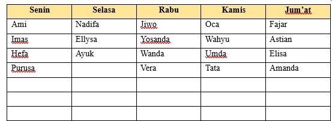 |
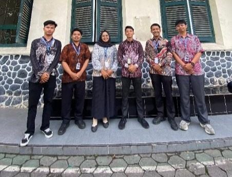 |
| Pendampingan OSN IPS | |
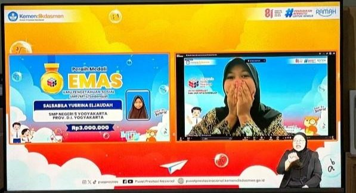 |
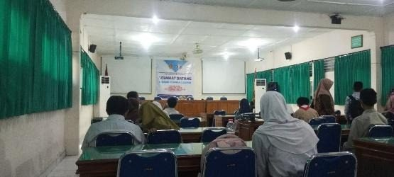 |
| Pengawasan AKM (Asesmen Kendali Mutu) | |
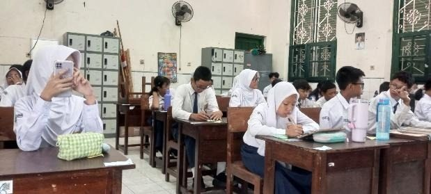 |
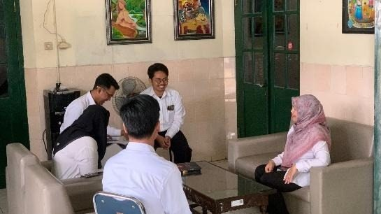 |
| Kemasyarakatan, Keagamaan, & Kebudayaan | |
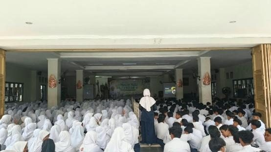 |
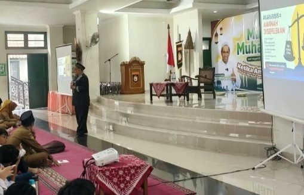 |
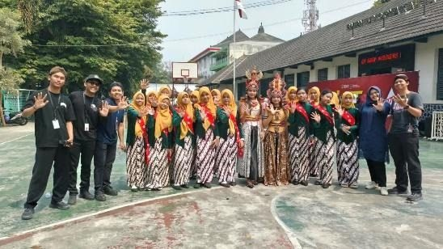 |
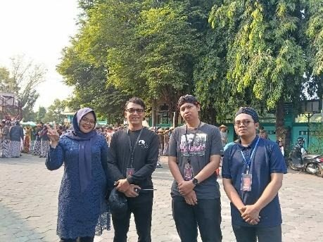 |
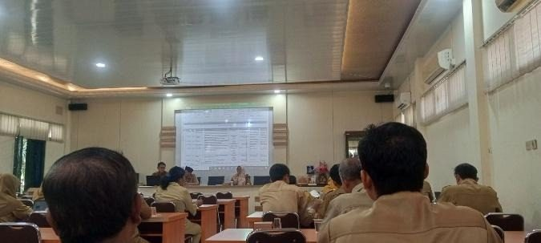 |
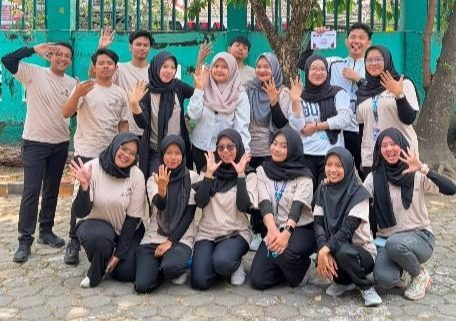 |